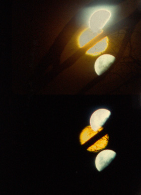

Lunar Almanac
Malena Szelam – CA/Chile 2014
4 min – 16mm – no dialogues
Sc+DoP+P: Malena Szelam
LUNAR ALMANAC consists of multiple shots of pure moonlight captured on light-sensitive 16mm film in a magical dark box. Developing the film heralds the start of a transformation. In the resulting projection, the moon reveals its phases like a magician revealing his tricks.
tuesday 13 oct 10.30 pm werkstattkino
Malena Szelam (1979, Chile) is a filmmaker and artist who lives and works in Montreal. She's part of Double Negative, an independent artists' collective interested in analogue film and experimental cinema. Szlam works at the intersection of experimental film and installation art.
Films (selection) Chronogram of Inexistent Time 2008 – Beneath Your Skin of Deep Hollow 2010 – Javi 2011